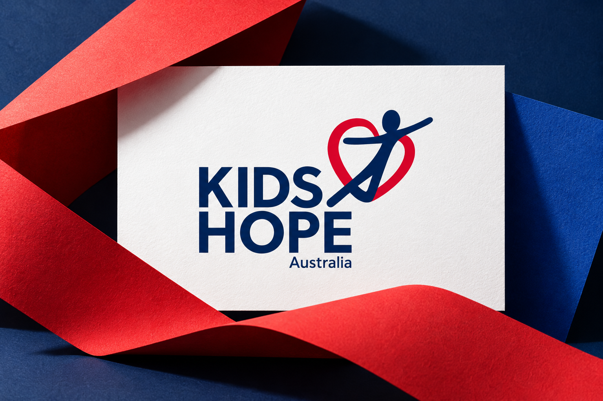

Kids Hope Australia
A clearer voice. A shared purpose.
Brand foundations, visual identity and communications strategy for Kids Hope Australia—brought to life through photography, video and fundraising campaigns that communicate the value of one-to-one mentoring.